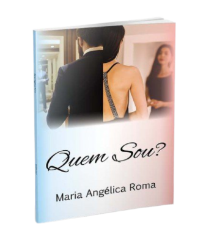

QUEM SOU?
de Maria Angélica Roma

- Você sabia que um dos itens para a plenitude de sua vida começa com o autoconhecimento?
- Você se conhece o suficiente para tomar decisões sábias em sua vida?
- Você tem bom relacionamento interpessoal?
- Você tem mais sucessos do que fracassos em sua vida?
- Você se sente uma pessoa capaz de decidir sua vida com força e coragem?
- Você é uma pessoa plena?
Saiba que a maior responsabilidade de sua vida é a sua vida. Não deixe ninguém ou nada decidir algo em sua vida que é de importância vital.
Você pode escolher ter cada dia pleno com escolhas conscientes ou deixar a vida e outras pessoas escolherem por você.
É VOCÊ QUE DECIDE!
Tudo começa ao você saber exatamente “QUEM É VOCÊ”.
Esse livro foi feito para proporcionar a você a condição do autoconhecimento e conseqüente autoestima equilibrada.